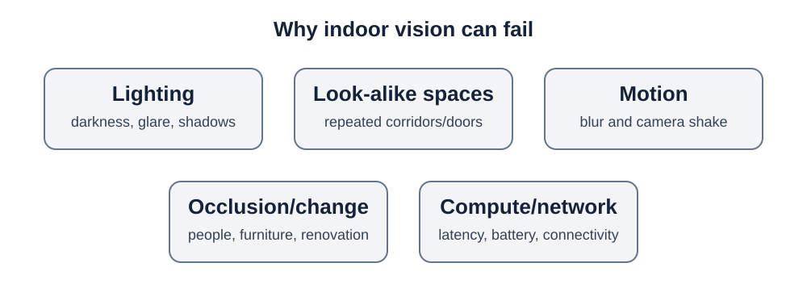

05 · Failure modes
Challenges
Page summary0:00
Indoor vision is powerful because a camera sees rich environmental information, but that same dependence on appearance creates failure modes that a practical system must manage.

Visual failure modes — Lighting and visual appearance
Dark areas, glare, shadows, or large appearance changes can make image matching harder. Repeated hallways and similar doors can also create perceptual aliasing: different places may look similar. Vision-based reviews identify environmental variability as a central challenge. [1]
Motion and occlusion
A moving phone can produce blur, while people or objects can temporarily hide useful landmarks. A navigation system therefore needs enough reliable visual evidence to avoid confidently matching the wrong place. UNav's technical design uses both global place retrieval and local feature information rather than relying on one visual cue alone. [4]
System-level challenges — Map maintenance
Indoor environments change: furniture moves, signs change, corridors are renovated. UNav describes a map-evolution feedback concept in which query images can help update the reference database over time. [4] Marker-based systems face a different maintenance problem: QR nodes must remain installed, visible, correctly mapped, and undamaged. [3]
Localization errors and how systems fail safely
A localizer that confidently reports the wrong place is worse than one that admits it does not know. UNav has explicit fallbacks. If no retrieved candidate shares enough SuperGlue matches with the query (≤ 30), it widens the search to more candidates and eventually reports failure instead of guessing. PnP heading estimation also failed in the system paper's experiments when the reference map was made very sparse, because too few 2D–3D correspondences remained. [4] Marker-based systems fail differently. Between QR codes, position comes from inertial dead reckoning, whose error grows with distance walked until the next code is seen. [3]
Computation, battery, network and real-time response
Instructions are only useful if they arrive while the user is still at the relevant decision point. In the 2022 system paper, one localization took roughly 2–3 s with 20 retrieved candidates on a single-threaded implementation. [4] In the 2024 field study, the client → server → client round trip averaged 3.62 s (range 0.24–5.96 s). [5] Running the heavy steps on a server reduces battery and memory demands on the wearable and lets more devices use the service. However, it makes guidance depend on network coverage and server availability. [5] The authors list several speed-ups: parallel CPU/GPU processing, loading smaller "sub-maps" around the user, and replacing exhaustive descriptor search with KD-trees or other approximate nearest-neighbor methods. [4] [5]
Limitations — What they mean in practice
Each row pairs a limitation reported in the research with its practical consequence for a deployed system. The consequences are our assessment, reasoned from the reported numbers.
| System | Reported limitation | Practical effect |
|---|---|---|
| QR + IMU | Codes decoded only within about 2 m; decoding failed at 3 m [3] | In wide halls or atria a user can walk past a code without a fix, so dead-reckoning drift keeps growing until the next code. Covering open spaces needs more or larger codes. |
| QR + IMU | Codes must be surveyed, installed and kept visible [3] | A damaged or covered code silently removes a correction point; a moved code is worse, because it injects a wrong absolute position. Someone must own maintenance. |
| QR + IMU | Only engineering tests: one short route, no blind or low-vision participants [3] | It is unproven whether a blind user can find and aim the camera at wall codes. In its current form, it suits robots better than people. |
| UNav | Average error below 1 m, but some test points had several feet of error [4] | Near a decision point, one bad estimate could point the user at the wrong door. Instructions should be confirmed by the next localization before a turn. |
| UNav | Round-trip latency of 3.62 s on average, up to 5.96 s [5] | At the measured 0.75 m/s gait, the user moves about 2.7–4.5 m before an instruction arrives, so turn prompts can come late. |
| UNav | Depends on a server and network connection [5] | In basements, stairwells or areas with weak coverage, guidance can stop unless the offline edge mode is used. |
| UNav | Accuracy depends on the reference map: sparse maps failed PnP, and appearance changes reduce matches [4] | Renovations or re-arranged spaces call for re-mapping or the proposed map-evolution updates. Map upkeep is an ongoing cost. |
| UNav | Short routes (50–200 m, 2–4 turns), the same route walked twice, a chaperone nearby [5] | Long, multi-floor, fully independent trips are untested, so real deployments should expect lower performance than the study. |
The human side — Accessibility is more than localization accuracy
A localization error measured in meters does not by itself tell us whether a person can navigate confidently. The 2024 UNav evaluation therefore measured outcomes such as wrong turns, travel time, idling, path efficiency, cane contacts, and help requests. [5] This is an important design lesson: evaluate the whole navigation experience, not just the computer-vision model.